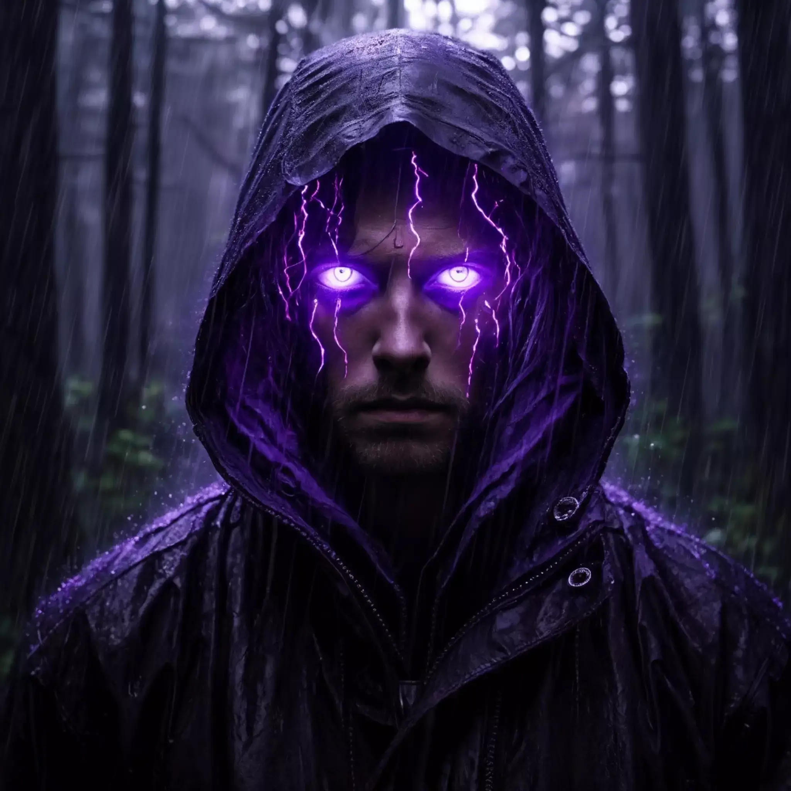

Behind the Build
Celebrating the people who brought this idea to life.-
The domain snapnostr.com is gifted by saiy2k. A Bitcoin maxi and a Nostr pleb and more specially, my mentor!
-

Generating image depends on the Browser Canvas API. But faced problems with downloading images. With Kieran's approval, I was able to use Snort's image proxy. Without this help, this project might've been haulted forever.
-
Inspired by the quality of poet.so and wanted to make one for Nostr. I'd openly admit that I copied certain aspects of the UI from Poet.so. I hope that I somehow gave it my own touch though!